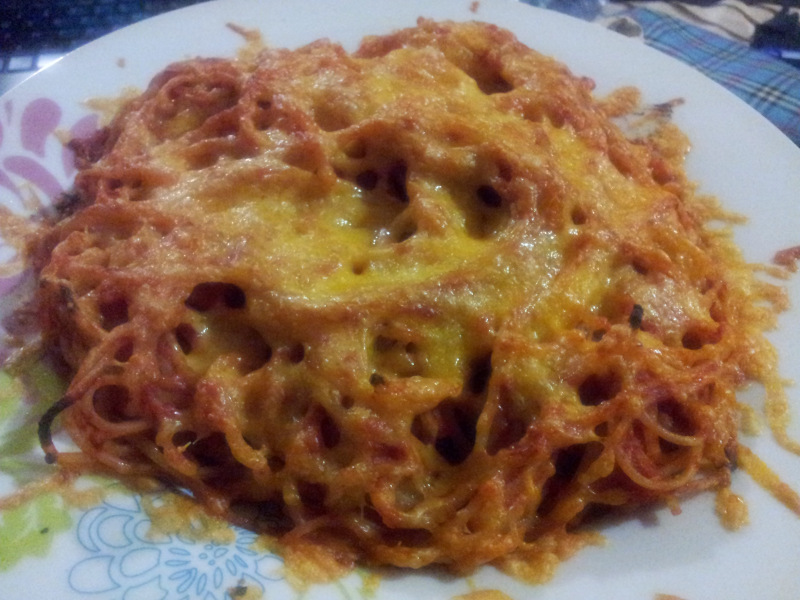

Mom's Spaghetti and Cheese

My mommy's classic spaghetti and cheese
I remember eating this from the tender age of babyhood. There are photographs
of my brothers and me eating this dish from a paper plate on the grass; needless
to say, we were all covered in sauce. But that is how a favorite dish is born. And
at the ripe old age of 32, this remains my favorite comfort food in any and all circumstances.
Thank goodness I've never been intolerant to gluten!
This is truly the easiest possibly dish to make. It doesn't have a wonderful nutrition profile,
but it's warm and comforting and perfect for anybody, anytime.
Ingredients:
- 1 lb of spaghetti
- 1 14 oz can of tomato sauce
- As much grated cheddar cheese as you like
- Salt and pepper to taste
Steps:
- Cook spaghetti according to package instructions (Remember to salt the water generously! I use
2 tbsp of salt for a full packet of spaghetti.)
- Drain spaghetti, and add the can of tomato sauce. Distribute the sauce through the spaghetti evenly.
- Pour saucy spaghetti into an oven-proof dish, and top with grated cheese.
- Put under your oven grill (or use a toaster oven) until cheese is light brown and bubbly.
- Slice like a casserole and serve hot, with salt and black pepper to taste.